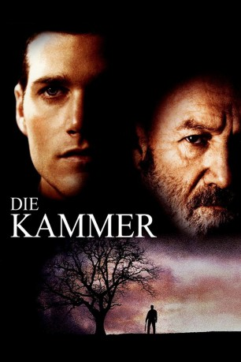

#5678 Die Kammer
Alternativ: The Chamber
 
 IMDB-Wertung: 6.0 / 10
IMDB-Wertung: 6.0 / 10  Metascore: 0
Metascore: 0 
Mississippi, 1967. Bei einem Bombenanschlag auf eine jüdische Kanzlei sterben zwei Menschen. Der sich anschließende jahrzehntelange Prozeß endet mit dem Todesurteil für das Ku-Klux-Klan-Mitglied Sam Cayhall. Nur der junge Anwalt Adam Hall, Cayhalls Enkel, glaubt an dessen Unschuld und versucht, die Hinrichtung zu verhindern. Doch der starrsinnige Rassist will sich von dem liberalen Juristen nicht helfen lassen. Zudem drängt die Zeit - Adam bleiben nur noch 28 Tage, um eine Aufschiebung der Urteilsvollstreckung zu erwirken...
Jahr: 1996
Dauer: 107 Minuten
FSK: 12
Land: USA Studio: Universal PicturesTonspuren: DD5.1 - ,
Untertitel:
Auflösung: 1080p (1920x816) Größe: 4904 MB
Genre: Drama, Krimi
Regisseur: James Foley
Drehbuch: Dan Sterling
Soundtrack:
Darsteller:
 Chris O'Donnell als Adam Hall
Chris O'Donnell als Adam Hall Gene Hackman als Sam Cayhall
Gene Hackman als Sam Cayhall Faye Dunaway als Lee Cayhall Bowen
Faye Dunaway als Lee Cayhall Bowen Robert Prosky als E. Garner Goodman
Robert Prosky als E. Garner Goodman Raymond J. Barry als Rollie Wedge / Donnie Cayhall
Raymond J. Barry als Rollie Wedge / Donnie Cayhall- Bo Jackson als Sgt. Clyde Packer
- Lela Rochon als Nora Stark
 David Marshall Grant als Gov. David McAllister
David Marshall Grant als Gov. David McAllister Nicholas Pryor als Judge Flynn F. Slattery
Nicholas Pryor als Judge Flynn F. Slattery Harve Presnell als Atty. Gen. Roxburgh
Harve Presnell als Atty. Gen. Roxburgh Richard Bradford als Wyn Lettner
Richard Bradford als Wyn Lettner Millie Perkins als Ruth Kramer
Millie Perkins als Ruth Kramer Josef Sommer als Phelps Bowen
Josef Sommer als Phelps Bowen Jane Kaczmarek als Dr. Anne Biddows
Jane Kaczmarek als Dr. Anne Biddows- Thom Gossom Jr. als Bink
- Nick Brett als Rally Skinhead
 Jack Conley als White Guard
Jack Conley als White Guard- Ken Colquitt als Visitors' Room Guard
- Neil Barton als Visitors' Room Guard
- Charles Swain als Observation Cell Guard
 Vince Canlas als Reporter #1 , uncredited
Vince Canlas als Reporter #1 , uncredited- John Kerry als Death-house guard , uncredited
- Douglas Swander als Reporter , uncredited
- Alexandra Wright als Protester , uncredited
- Greg Goossen als J.B. Gullitt
- Seth Isler als Marvin B. Kramer
- Sid Johnson als Josh Kramer
- Blake Johnson als John Kramer
- Leonard Vincent als Lucas Mann
- Bonita Allen als Baker Cooley
- Dick Stilwell als George Nugent
- Gloria Jackson Winters als Woman Guard
- Greg Wayne Elam als Joe Lincoln
- Zaquirii Walters als Quince Lincoln
- Jana Barraza als Gate Attendant
- Craig A. Pinckes als Rally Skinhead
- Dan Beene als Lead Sheriff
- James Geralden als Newscaster
- Michelle Davison als Prof. Burns
- Stephanie Bell Flynt als Herself - On-Air Newscaster
- Ruby Wilson als Jesse, Lee Bowen's Maid
- Joe Meek als Senatorial Aide
- Anthony Kopcynski als Visitors' Room Guard
- Gilbert Ivan Johnson als Trustee
- Jerry Gauny als Inmate
- Ed Siebert als Inmate
- Bob Rummler als Inmate
- Disraeli Ellison als Inmate
- Rod Phillips als Inmate
- Jeff Sanders als Inmate
Datei: X:\1996\Kammer, Die (1996, FSK12, 1920x816).mkv seit 09.03.2017
Festplatte: HD 1996-2002
 Es gibt insgesamt 78 Filme in der Gruppe '1996'
Es gibt insgesamt 78 Filme in der Gruppe '1996'